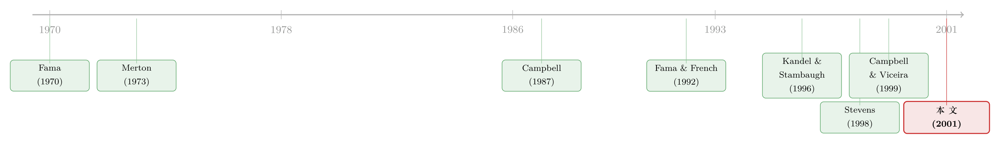

如果价值与规模溢价，只是长期投资者在『对冲未来』？
本文读的是 Lynch (2001, Journal of Financial Economics)：当一个有限生命、风险厌恶系数为 4 的多期投资者，第一次被允许在多只美国股票组合（按规模、按账面市值比构造）之间挑挑拣拣时，收益可预测性诱发的「对冲需求」会让他在年轻时主动远离高账面市值比股票、远离小盘股；用他的最优组合当「市场」算出的异常收益，方向上与现实中的规模、价值溢价一致，但量级只有市场基准的约 15%。换句话说——对冲需求至多是规模与价值之谜的一半解释，而且它自己还会露出破绽。
1 一个老问题，和一个被忽略的嫌疑人
Fama and French (1992) 把一件事钉死在了文献里：规模（size）和账面市值比（book-to-market ratio）能解释股票横截面预期收益的变化，而且是在 CAPM 的 beta 之外、额外地解释。小公司收益更高，高账面市值比（价值股）收益更高。这件事二十多年来被反复验证，却始终没有一个让所有人都满意的「为什么」。
通常的争论分两派。一派说这是风险补偿——Fama and French (1993) 造出模仿组合，证明对这些组合的因子载荷能大幅压低极端组合的异常收益；另一派说这是错误定价或投资者的非理性行为——Lakonishok et al. (1994) 就论证价值股并不比成长股更危险，高收益来自市场的系统性误判。
但 Lynch 在这篇论文里，把一个常常被一笔带过的嫌疑人重新请上了审判席：多期投资者的对冲需求（hedging demand）。
它的逻辑其实非常古典。Merton (1973) 和 Fama (1970) 早就告诉我们：当投资者不止活一期，他在乎的就不只是组合的均值和方差，他还在乎组合与一组状态变量（state variables）的协方差。如果股票收益能被一组滞后的工具变量预测——而 Campbell (1987)、Fama and French (1989) 早已证明，一个月期国债利率、期限溢价、股利收益率（dividend yield）确实能预测美国股票收益——那么一个多期投资者就会在意：我的组合，在「未来投资机会变差」的那一刻，能不能帮我顶一下？
这就是对冲需求。问题是：它真的大到能在均衡中抬高某些股票的预期收益吗？
2 这篇论文到底新在哪
接着，一个自然的问题是：既然对冲需求的故事这么古典，为什么之前没人用它来解释规模和价值之谜？
答案藏在一个技术性的、却致命的限制里。在 Lynch 之前，几乎所有「校准到美国数据、研究可预测性下多期组合选择」的论文——Kandel and Stambaugh (1996)、Brennan and Schwartz (1996)、Barberis (2000)、Campbell and Viceira (1999)、Brandt (1999)、Balduzzi and Lynch (1999)——给投资者的唯一股票资产都是市场组合。只有一只股票时，对冲需求只能改变你在股票和无风险资产之间的配比，改变不了股票内部的构成。
Lynch 这篇论文的真正贡献，是第一个让多期投资者同时持有多只美国股票组合，而且这些组合恰恰是按规模和账面市值比构造的。于是对冲需求第一次有了用武之地：它不仅能决定投资者放多少钱在股票上，更能决定他在小盘股与大盘股之间、价值股与成长股之间怎么分。这一步打通后，论文才可能回答那个真正想问的问题——规模与价值效应，能不能被可预测性诱发的对冲需求解释掉？
（沿着同一条「多资产、动态配置」的脉络，可参见《长期投资者的『天书』：把动态资产配置解成一组会做回归的方程》 与《把『天书』一样的动态组合，交给一台会做回归的模拟器》。）
3 投资者的问题：一个会向后倒着解的贝尔曼方程
要把对冲需求算出来，先得把投资者的问题写清楚。
设有 N 只风险资产和一只无风险资产。t 到 t+1 的风险资产收益向量 R_{t+1}，要么独立同分布（i.i.d.），要么可以被一个 K×1 的工具变量向量 Z_t 预测；无风险利率 Rf 为常数。投资者有限生命 T 期，效用是常相对风险厌恶（constant relative risk aversion, CRRA）型，时间偏好率为 β。终生期望效用写作：
$$ E\!\left[\sum_{t=1}^{T}\beta^{t}\,\frac{c_t^{\,1-\gamma}}{1-\gamma}\;\Big|\;Z_1\right] $$
其中 c_t 是 t 期消费，γ 是相对风险厌恶系数（论文基准取 γ = 4）。财富 W 的运动方程为：
$$ W_{t+1}=\left(W_t-c_t\right)\!\left[a_t'\!\left(R_{t+1}-Rf\,i_N\right)+Rf\right]=W_t\,(1-k_t)\,R_{W,t+1} $$
这里 a_t 是 t 期为风险资产选择的 N×1 权重向量，R_{W,t+1} 是组合收益，k_t 是当期消费掉的财富比例，i_N 是元素全为 1 的向量。论文解了两个版本：一个允许卖空，一个禁止卖空。
接着是关键的一步。由于 CRRA 效用和预算约束对财富 W 是线性的，整个优化问题对财富是 (1-γ) 阶齐次的——这意味着最优策略与财富水平无关。于是值函数可以「除掉」财富，贝尔曼方程被压缩成只依赖状态变量 Z_t 和时间 t 的形式：
这个方程从 t = T-1、a(Z_T, T) = 1 出发，向后倒着迭代求解：每一步用上一轮算出的 a(Z_{t+1}, t+1) 去解当期的优化问题。
为什么对冲需求恰恰藏在 c3 这一项里？因为如果收益是 i.i.d.（Z 对未来毫无信息），那么 a(Z_{t+1}, t+1) 就退化成一个与状态无关的常数，投资者每期的最优组合都一样，他就是个「短视」的均值-方差优化者。而一旦 Z 能预测收益，延续价值就会随 Z 起伏，投资者就要问：我手里的资产，在 Z 变差（未来机会恶化）时表现如何？想顶住这种恶化的冲动，就是对冲需求。
4 把数据塞进格点：VAR 与正交化
然后，怎么把这套抽象框架校准到美国数据？
Lynch 沿用 Balduzzi and Lynch (1999) 的做法，对每一组「资产 + 预测变量」估计一个向量自回归（vector autoregression, VAR）。把收益转成连续复利 r = ln(1+R)，并把预测变量标准化为零均值、单位方差：
$$ r_{t+1}=a_r+b_r\,Z_t+e_{t+1} $$ $$ Z_{t+1}=a_Z+b_Z\,Z_t+\nu_{t+1} $$
但真正关键的一步，是把收益创新 e_{t+1} 对状态变量创新 ν_{t+1} 做一次回归，得到 N×K 的系数矩阵 g，从而把收益写成：
$$ r_{t+1}=a_r+b_r\,Z_t+g\,\nu_{t+1}+u_{t+1} $$
其中 u_{t+1} 与 ν_{t+1} 正交。这个 g，就是整篇论文的发动机：它度量了收益冲击与状态变量冲击之间的同期相关性。直觉上，股利收益率高 → 未来预期收益高（投资机会好）；而今天股价上涨会同时推高当期收益、压低股利收益率（机会变差的信号）——于是收益与股利收益率创新呈负相关。股票因此带有一个「坏」性质：它恰好在「未来机会变差」的那一刻给你正回报，却在机会变好时让你失望。长期投资者想对冲掉这种性质，就会调整组合的构成。
技术上，论文用 Tauchen and Hussey (1991) 的高斯求积（Gaussian quadrature）把连续的 VAR 离散成格点：股利收益率 D 用 19 个格点，期限溢价 S 用 7 个，股票收益创新用 3 个。作者特意验证：把收益格点从 3 个加到 15 个，对最优权重「几乎没有任何影响」。
数据是 1927 年 7 月到 1996 年 11 月的月度序列，全部用 CPI 通胀指数实际化。无风险利率取一个月期国债利率的均值，Rf = 0.042%。风险资产分四套：VM（仅纽交所市值加权组合）、3M（三只规模组合 M1/M2/M3）、3B（三只账面市值比组合 B1/B2/B3，由 Fama-French 的六个组合合成）、3B2M（六只规模×账面市值比组合）。预测变量也分四套：U（假设 i.i.d.）、D（仅股利收益率）、S（仅期限溢价）、F（两者都用）。
5 对冲需求长什么样：MVO + CVO 的两枪
有了机器，结果来了。
把年轻投资者的组合和他「最后一期」的组合相比——最后一期没有未来可对冲，等价于纯粹的均值-方差优化——用股利收益率作预测变量时，对冲需求让他在年轻时偏离高账面市值比股票、偏离小盘股。
论文给这个倾斜方向提供了一个漂亮的解释，建立在 Merton (1973) 的刻画之上：多期投资者的风险资产组合，是两个组合的线性组合。一个是均值-标准差空间里的切点组合，即均值-方差最优组合（mean-variance optimal, MVO）；另一个是与状态变量最大相关的组合（covariance-variance optimal, CVO）。Stevens (1998) 关于协方差矩阵逆的论证说明：MVO 的权重，部分取决于各资产预期超额收益的横截面格局；类比地，CVO 的权重，部分取决于各资产与状态变量条件协方差的横截面格局。
于是那个看似矛盾的结果就讲通了。高账面市值比组合在三只组合里与股利收益率的协方差最负——按理说想对冲、想要更负协方差的投资者应该多持有它才对。可年轻投资者偏偏减持了它。原因是：从低到高账面市值比，协方差越来越负的这个梯度，不如预期超额收益上升的梯度陡。高账面市值比组合的高超额收益给了它在 MVO 里一个很大的权重，而一旦投资者开始在意「与股利收益率的负协方差」，这个权重就被往回拉。有意思的是，用三只规模组合或三只账面市值比组合时，CVO 的权重全为正；年轻投资者持有正的 CVO，于是对冲需求的净效果，是让他的配置变得没那么极端。
6 反转：对冲需求只解释了约 15%
接下来是这篇论文最诚实、也最关键的一步。
Lynch 把年轻投资者当作代表性投资者（representative agent），用她的最优早期组合替代「市场组合」，去计算 CAPM 意义下的异常收益。由于对冲需求让最优早期组合落在条件均值-方差前沿内部，这些异常收益必然非零（Kandel and Stambaugh, 1995）。
结果是：用她的组合算出的异常收益，横截面格局与用市场代理（市值加权纽交所）算出的完全一致——小公司高于大公司、高账面市值比高于低账面市值比。但量级呢？用投资者组合得到的异常收益横截面离散度，只有用市场代理时的约 15%（规模组合和账面市值比组合都是这个数）。把风险厌恶从 4 提到 10，离散度会变大。
于是结论只能是谨慎的：对冲需求可能是小盘股、价值股高预期收益的一个「部分」解释，但远不是全部。
而真正的反转在于：即便加上了对冲需求，这位投资者仍然想卖空低账面市值比组合，去做多高账面市值比组合。这就让「把她当代表性投资者」这件事变得很成问题——代表性投资者在均衡里是不能净卖空任何在外流通组合的。Lynch 自己点破：与其把她当成整个经济的代表，不如把她想成经济中的某一个个体或群体，他们利用了其他偏好不同的投资者（比如 Campbell and Cochrane (1999) 的习惯偏好，或 Barberis et al. (2000) 的行为模型）所创造出来的投资机会的时变性。
7 谁制造了对冲需求：股利收益率赢了，期限溢价输了
最后一个值得记住的结果，来自效用成本和敏感性分析。
论文计算了几个「放弃多少财富换取某种信息」的效用成本。两个数字最醒目：一个只能用市值加权指数的投资者，为了获得账面市值比组合的准入，愿意放弃的财富比例，远大于为获得规模组合所愿意放弃的；而一个投资者为获得股利收益率信息所愿意放弃的财富，又远大于为获得期限溢价信息所愿意放弃的。
为什么股利收益率能造出大对冲需求，而期限溢价几乎造不出？敏感性分析给出了两个关键参数：预测变量的持续性（persistence），以及它与资产收益的相关性。股利收益率两者都占优——更高的持续性，以及量级大得多的收益相关性。一个稳健性检验还表明，投资者的配置决策对时间偏好参数 β 的合理变动并不敏感，说明结果不是这个参数「调」出来的。
8 文献脉络
这条研究线，是一条从「理论早已备好、实证迟迟跟不上」走向「终于被算出来」的路。
源头是两篇奠基之作：Fama (1970) 的多期消费-投资决策，和 Merton (1973) 的跨期 CAPM——它们告诉我们，长期投资者会在意组合与状态变量的协方差。接着是可预测性的实证地基：Campbell (1987) 与 Fama and French (1989) 证明股利收益率、期限溢价能预测股债收益。与此并行，Fama and French (1992, 1993) 把规模和价值之谜砸进了文献，逼出了一个「为什么」的大问号。
然后，一批论文开始数值地求解「可预测性下的多期组合选择」——Kandel and Stambaugh (1996)、Campbell and Viceira (1999)、Balduzzi and Lynch (1999)——但它们都只给投资者一只股票。技术上，Stevens (1998) 关于协方差矩阵逆的结果，为分解 MVO 与 CVO 提供了工具；Campbell (1996) 则从欧拉方程的角度问过相近的问题。
本文（Lynch, 2001）所处的位置，是把「多只按规模/账面市值比构造的股票组合」第一次塞进多期投资者的手里，从而把对冲需求对组合构成的影响量化出来，并诚实地给出一个「部分解释」的答案。

9 评论与延伸（Q&A + 研究方向）
(a) 几个可能的疑问
Q：这篇论文是不是「证明」了规模和价值溢价来自对冲需求？
恰恰相反，它给的是一个偏否定的结论。对冲需求算出的异常收益虽然方向对，但量级只有市场基准的约 15%，而且投资者还想净卖空低账面市值比组合——这意味着她不能是代表性投资者。所以本文的贡献是把对冲需求这个「嫌疑人」量化后排除了它作为主犯的可能，只保留了「从犯」的身份。
Q：为什么只看一个风险厌恶系数为 4 的投资者，结论靠得住吗？
论文做了稳健性检查：把 γ 从 4 提到 10，对冲需求诱发的异常收益离散度会变大。也就是说，更高的风险厌恶让对冲需求更显著，但即便如此也填不平那 85% 的缺口。γ = 4 是个相对保守、被文献广泛接受的取值，所以基准结论不算被某个极端参数撑起来的。
Q：「对冲需求」和教科书里的「跨期套保」「预防性储蓄」是一回事吗？
不完全是。预防性储蓄改变的是消费-储蓄的总量；这里的对冲需求改变的是风险组合的内部构成——在小盘/大盘、价值/成长之间重新分配，目的是让组合在「未来投资机会恶化」时表现得好一些。它是 Merton (1973) 跨期 CAPM 里那个「状态变量协方差」项的具体化。
Q：为什么是股利收益率而不是期限溢价驱动了一切？
两个参数：持续性和与收益的相关性。股利收益率的自回归持续性更高，且与股票收益创新的相关性量级大得多（这正是 VAR 里
g矩阵的内容）。持续性高，意味着今天的状态对很多期之后都有信息含量，长期投资者才值得为它调仓；相关性大，意味着资产真的能对冲掉状态变化。期限溢价两头都弱，所以几乎不产生对冲需求。
Q：用「投资者自己的最优组合」当市场基准来算异常收益，这套路可信吗？
这是本文方法上最微妙的地方。Kandel and Stambaugh (1995) 早已指出，一旦基准组合落在均值-方差前沿内部，异常收益必然非零，但其横截面的符号和大小事前都是模糊的。Lynch 的做法是把它当成一个「如果年轻投资者是代表性投资者会怎样」的思想实验，并诚实地提醒读者不要过度解读——因为净卖空的事实已经否定了代表性投资者的假设。
Q：禁止卖空会不会改变主要结论？
论文同时解了允许和禁止卖空两个版本。禁止卖空主要影响那个「想做空低账面市值比」的极端配置能否实现，但对「年轻时偏离高账面市值比、偏离小盘股」这一倾斜方向的定性结论不构成颠覆——倾斜来自 MVO 与 CVO 的合成，而非卖空本身。
(b) 几个可能的研究问题与提案
1. 把这套框架搬到公司债横截面。
【经济故事】信用利差同样存在被广泛记录的横截面格局（评级、久期、流动性），而公司债收益的可预测性（利差、期限结构）也很强。一个多期投资者在不同信用桶之间的对冲需求，可能部分解释「为什么低评级债的超额收益这么高」。 【可行性】中。数据可得（TRACE + 评级 + 宏观预测变量），方法可直接移植本文的 VAR + 求积框架。难点在于公司债收益的非正态性和违约跳跃，需要在离散化时谨慎处理；识别上仍是「校准 + 数值解」，属于结构性论证而非因果识别，doable 但说服力取决于校准是否可信。
2. 外资持有人作为「另一类偏好」的实证检验。
【经济故事】本文把投资者描绘成「利用其他偏好不同投资者所创造的机会」的人。外资与本土投资者的投资期限、风险厌恶、对冲需求很可能系统性不同——外资是不是恰好在本土投资者对冲需求最强的资产上提供了对手盘？ 【可行性】中偏低。需要分投资者类型的持仓面板（如 13F、跨境持仓数据），把「谁在持有 CVO 类资产」识别出来。识别策略可借力外资准入的政策变动做准实验，但把「对冲需求」从持仓里干净地反推出来很难，更像是描述性证据。
3. 流动性作为第三个状态变量。
【经济故事】本文只用了股利收益率和期限溢价。但市场流动性本身是高度持续、且与收益强相关的状态变量——一个长期投资者会不会为了对冲「流动性枯竭」而系统性地偏离某些组合？这可能把流动性溢价和对冲需求统一起来。 【可行性】高。流动性指标（Amihud、买卖价差）持续性和与收益的相关性都满足本文识别出的两个关键条件，直接扩充
Z向量即可。主要工作量在重新校准 VAR 和验证求积精度，技术上 doable。
4. 用真实持仓检验「年轻投资者偏离价值股」这一预测。
【经济故事】本文给出一个可证伪的横截面预测：年轻、长期的投资者应当相对偏离高账面市值比和小盘股。退休账户（401(k)、生命周期基金）的持仓数据可以直接对账。 【可行性】中。需要按年龄/投资期限切分的持仓数据，且要控制掉风险厌恶随年龄的变化等混杂因素。和《年纪越大，越该把钱从股票里挪出来吗？》 的生命周期视角天然互补，是个 doable 的实证方向。
10 我的判断
这篇论文的贡献清晰而克制：它第一个把「多只股票组合」交到多期投资者手里，从而把对冲需求对组合构成的影响算了出来，并用 Merton (1973) 的 MVO + CVO 框架给了一个可解释的方向。更可贵的是它的诚实——结论不是「我找到了规模和价值之谜的答案」，而是「我量了这个嫌疑人，它至多解释 15%，而且自己还会露馅」。在一个充斥着「我的因子解释了一切」的文献里，这种克制本身就是贡献。
对识别的担忧也很直接。这是一篇校准+数值解的论文，所有结论都建立在 VAR 估计和求积离散化之上——g 矩阵、持续性参数、γ 的取值，任何一个被数据的小样本噪声带偏，都会改变对冲需求的量级。论文用「加格点不改变结果」「改 β 不改变结果」做了内部稳健性检查，但它无法回答外部有效性的问题：1927–1996 这段样本里股利收益率的强持续性，本身可能就是个小样本假象（这一点在后来的预测回归文献里被反复鞭打，可参见《股利收益率到底能不能预测收益？》）。如果股利收益率的可预测性是虚的，那对冲需求也就跟着虚了。
后续我最想看到的，是把这套框架接上真实持仓而非「假想的代表性投资者」：到底有没有一类投资者，其持仓的横截面倾斜与本文预测的 MVO + CVO 合成相吻合？以及，把流动性、信用利差这些「持续且与收益强相关」的状态变量纳入后，对冲需求的版图会不会比股利收益率单枪匹马时大得多。如果答案是肯定的，那么这篇 2001 年的论文留下的那 85% 缺口，或许并不是对冲需求的失败，而只是我们当年给它的状态变量太少了。
参考文献
- Balduzzi, P., Lynch, A.W. (1999). Transaction costs and predictability: some utility cost calculations. Journal of Financial Economics 52, 47–78.
- Barberis, N. (2000). Investing for the long run when returns are predictable. Journal of Finance 55, 225–264.
- Barberis, N., Huang, M., Santos, T. (2000). Prospect theory and asset prices. Quarterly Journal of Economics 116, 1–54.
- Brennan, M.J., Schwartz, E.S., Lagnado, R. (1997). Strategic asset allocation. Journal of Economic Dynamics and Control 21, 1377–1403.
- Campbell, J.Y. (1987). Stock returns and the term structure. Journal of Financial Economics 18, 373–399.
- Campbell, J.Y. (1996). Understanding risk and return. Journal of Political Economy 104, 298–345.
- Campbell, J.Y., Cochrane, J.H. (1999). By force of habit: a consumption-based explanation of aggregate stock market behavior. Journal of Political Economy 107, 205–251.
- Campbell, J.Y., Viceira, L.M. (1999). Consumption and portfolio decisions when expected returns are time varying. Quarterly Journal of Economics 114, 433–495.
- Fama, E.F. (1970). Multiperiod consumption-investment decisions. American Economic Review 60, 163–174.
- Fama, E.F., French, K.R. (1989). Business conditions and expected returns on stocks and bonds. Journal of Financial Economics 25, 23–49.
- Fama, E.F., French, K.R. (1992). The cross-section of expected stock returns. Journal of Finance 47, 427–465.
- Fama, E.F., French, K.R. (1993). Common risk factors in the returns on stocks and bonds. Journal of Financial Economics 33, 3–56.
- Kandel, S., Stambaugh, R. (1995). Portfolio inefficiency and the cross-section of expected returns. Journal of Finance 50, 157–184.
- Kandel, S., Stambaugh, R. (1996). On the predictability of stock returns: an asset allocation perspective. Journal of Finance 51, 385–424.
- Lakonishok, J., Shleifer, A., Vishny, R.W. (1994). Contrarian investment, extrapolation and risk. Journal of Finance 49, 1541–1578.
- Lynch, A.W. (2001). Portfolio choice and equity characteristics: characterizing the hedging demands induced by return predictability. Journal of Financial Economics 62, 67–130.
- Merton, R.C. (1973). An intertemporal asset pricing model. Econometrica 41, 867–887.
- Stevens, G. (1998). On the inverse of the covariance matrix in portfolio analysis. Journal of Finance 53, 1821–1827.
- Tauchen, G., Hussey, R. (1991). Quadrature-based methods for obtaining approximate solutions to nonlinear asset pricing models. Econometrica 59, 317–396.